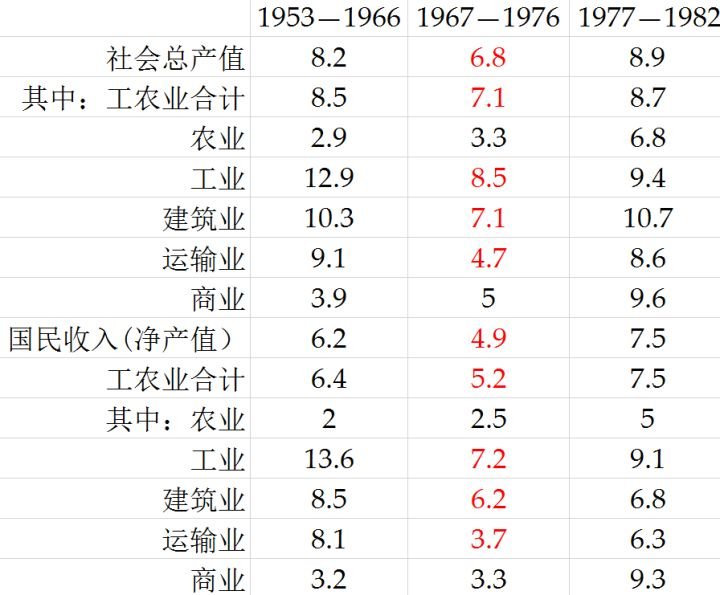
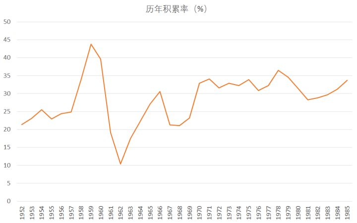
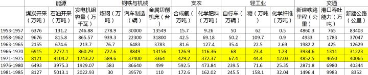
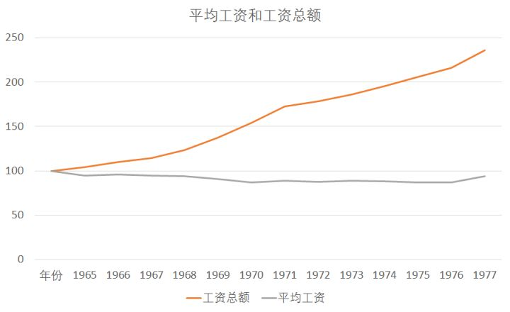
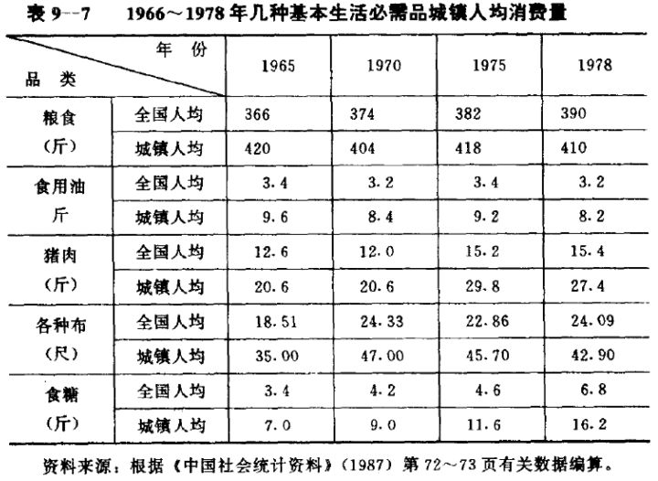
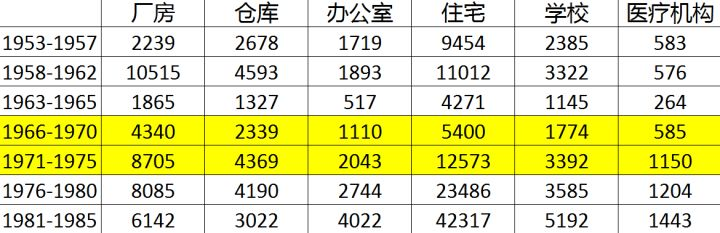
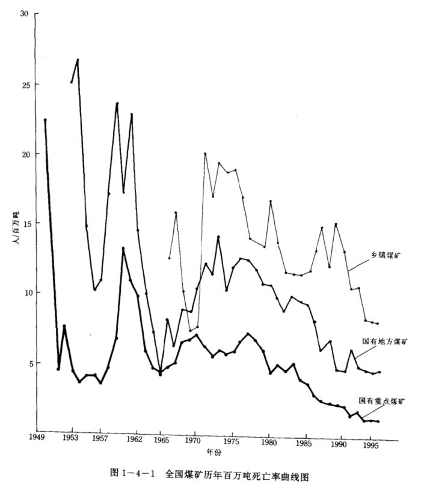
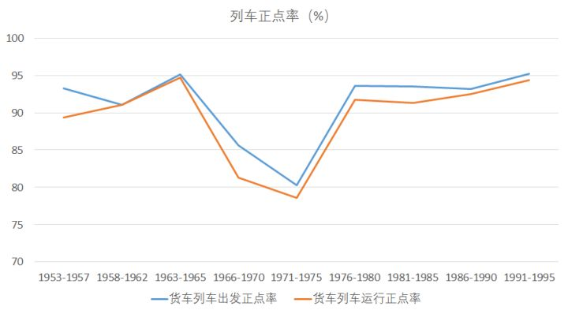
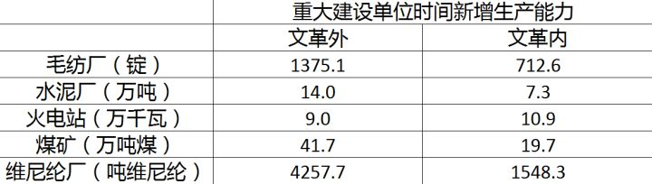

不知从什么时候开始，越来越多人开始对这样一件事抱有怀疑：文化大革命时期，我国经济到底有没有到崩溃边缘？有没有遭受严重损失？
由于长期只有一种官方宣传声音，连这种丈二和尚摸不着头脑的怀疑竟然也慢慢滋长了起来。现在，被这样的观点所影响的人已经为数不少，感觉还是需要做一点简单的科普，来做个纠正。
（上一次出现这种对官方宣传的大规模反动，大概已经是《蒋委员长铁血卫队大战雨花台》之类的帖子大行其道，微博上出现一大批国民党粉丝的时候了。其实，这两者很接近。）
为了「不要让谣言重复一千遍变成事实」，我感觉有必要写这个回答。
下表来自李成瑞的论文《 十年内乱期间我国经济情况分析—— 兼论这一期间统计数字的可靠性 》，该论文写于1984年，他将建国以来经济数据较为完整的年份划分为三个时期进行比较。

可以看到，从1967年到1976年，是各项产出指标全面落后的时期——十四个指标全部落后于1977-1982年，还有十个指标的增速比1953到1966年要低。
但这张表并不能打消人们的所有疑虑，反而成为了怀疑的起点。从这张表开始，一些人构建了他们对主流宣传怀疑的理论框架：
1，文革期间进行了大量基础设施建设，为改革开放后的经济加速提供了基础，因此改革开放后的经济增长，不来自改革，而来自文革。
2，文革之后，工资大幅度提高，享受消费增加，虽然短时间内提高了经济增长，但挤出了必要的基础设施建设支出，造成了80年代末期的经济波动。
真的是这样么？
一，结构失调
首先从「积累率」这个名词开始讲起。积累率，可以看成是你为了未来的消费而放弃的当期消费。这部分被放弃掉的消费，通过一系列投资建设，变成了下一期的生产力。

资料来源：《中国统计年鉴1986》
从上图可以看到，中国的积累率仅有两个明显的波动，第一次是在大跃进初期快速上升，而在大跃进后期所有项目一律停工时降到谷底；第二次是在文革初期全国内乱时下降，而在70年代初三线建设进入高潮时上升。而其他的时间段，积累率都较为稳定，在30%到35%左右。
很显然，“文革期间进行了高积累”这个论断，从积累率这个数据上看并不能得到支持。那么“文革高积累”这个印象是从哪里来的呢？
这里就要看另一个指标——历年主要产品新增生产能力。

资料来源：中国固定资产投资统计资料（1950-1985）
上表列出了不同时期的一些主要工业品的新增生产能力，为了便于查看，这里按照不同的五年计划来划分，其中三五（1966-1970）、四五（1971-1975）和一部分五五计划（1976-1980）的新增产品生产能力是在文革中建成的。
可以看到：
1，在钢铁与机械行业、支农行业，文革期间的产能增加非常明显
3，在能源行业和交通行业，文革期间的产能增加与文革后相比各有高低；
4，在轻工业产能增加上，文革期间的产能增加相对很少。
不过在很多「工业党」看来，只有钢铁机械和支农行业算是积累，其他部门，尤其是轻工业，压根儿不算产能积累，这部分产能增加也就被他们无视了。
不能否认，钢铁、机械和肥料是工业非常关键的组成部分。可这谁不知道呢？连屏幕之前的你我他都能说出个一二三来，可是为什么文革之后，这两部分的产能增加被减少了那么多，而轻工业的增长成为了主要积累？
对这个问题，我们在知乎上看到了太多的片儿汤话，什么收买阶层啦，寅吃卯粮啦，这话谁都会说，但还是那句话——连你都知道是寅吃卯粮了，那时候的人们不知道？
这时候我们还是得回到文革期间的两个基本经济特征上来，才能理解文革后的产业方向大转型：
1，十年不涨平均工资

资料来源：《中国统计年鉴（1984）》
工资不变这个特征在这个回答大数据技术是否有可能拯救计划经济？ - 知乎 中也提到过。工资十年不增长，是积累率太高的缘故吗？不是，从前面积累率的变化看，文革中和文革后的差别并不能解释为什么77年之后的工资能快速增长。
但在平均工资不变甚至下降的基础上，工资总额却在不断提高。这个现象叫做「低工资，广就业」，也是我国在改革开放前长期坚持的政策。而文革时期，是这个原则被实施得最极端的阶段，这和意识形态的极端化是分不开的——为了防修反修，因此极力避免劳动生产率的人与人差异扩大。
这个原则的初衷当然是好的，为了让最广大人民分享经济受益嘛！但是当这个原则被引向极端时，平均工资不能动，工人增加却相对容易，人们便采取迂回战术，用增加就业人员的方式来增加家庭收入，这导致了劳动生产率的进一步降低。
当然，劳动生产率这个指标在当时并不重要，他会被套进「经济主义」或者「唯生产力」的大帽子里面，被狠狠批判。
2，生活水平不增反降
除了平均工资不变之外，人们的生活水平也出现了下降。62年大跃进结束后，在63到65年，「抓吃穿用」政策成为产业发展的主流。但是，随着文革开始和三线建设的铺开，吃穿用政策无疾而终，重工业偏向的政策重新占据主流。

上表可以看到，在粮食和食用油方面，在整个文革期间基本没有增长，如果说这个部分和化肥与合成氨相关，因此增长缓慢也情有可原的话，布和食糖的增长在三线建设全面铺开的四五时期也非常缓慢。
资料来源：中国固定资产投资统计资料（1950-1985）
上表为各个时期不同房屋的建筑面积，单位是万平方米。可以看到，文革时期的住宅、学校和医疗机构的建造都比较缓慢，一些指标比文革前还要慢许多，尤其是住宅，1966年到1978年竣工的还没有1953年到1965年竣工得多。城市居住环境和公用事业发展，在文革期间非常缓慢。

想想看，十年不涨工资，十年的生活水平没有提高，十年了住的房子越来越小——但国家仍然在重工业上加大投资。
不是说国家不能投资重工业，而是如果在投资重工业的同时，让民生相关的工业一点点都得不到发展，结果会如何？
在防修反修和集体主义占据绝对主流的年代，你可以把国家看成一个人，把人们看成一个个细胞。突然，国家要健身了！于是各种忌口，劳其筋骨，一年后获得了一副美好肉体。
但是，一个个人，并不是完全听从大脑指挥的一个个细胞。他们不是不可以参加国家的工业化大计，不是不可以暂时性地贡献自己的力量，但是时间长了，他们是会不满意的。当这样的不满意越来越多，下一个步骤就是补欠账了。
就好像健身到一半，身上的细胞不干了，大病一场，你不得不进医院躺上一个月，花很多钱，吃上很多营养品，身上刚刚练出的肌肉也消耗掉不少。在这种情况下，把「因为健身太狠了而不得不在医院躺一个月」这种补上欠账的行为看成「寅吃卯粮」，未免就有些可笑了。
二，效率低下
如果仅仅是停留在这里，我们可能还只是将文革看成是一个经济比例失调的年代。但事实上，文革真正造成的损失，是在效率上，包括工业生产效率和投资效率。而工业效率和投资效率的低下，则要从当时的工业组织形式上破题。
在这个方面，最好的著作是夏尔•贝特兰的《大跃退》。贝特兰因为1976年政治风向的变化，在1977年辞去中法友谊协会的主席，并在1978年写下了对文革后一些问题的看法，即《大跃退》。
这本书可以说是一部分左派「防修反修」的大预言和圣经，但也同样让我们看到，在「防修反修」的同时，还要提高生产效率，是一件多么困难的事情。为了制止修正主义路线的露头，坚持工人阶级的绝对领导，要反对的东西有很多——要反对一长制，要让工人能有很高的权力反对规章制度，要制止企业的唯利润倾向，要坚持工资上的平均主义——可是这样做确实造成了生产效率的低下和生产的一些混乱。

资料来源：中国煤矿伤亡事故统计分析资料汇编（1949-1995）
上图可以看到历年来不同煤矿的百万吨死亡率变化。可以看到，大跃进和文革时期，国有重点煤矿和地方煤矿的百万吨死亡率都很高，而与此同时煤炭挖掘的变化幅度并不大。（当然我们也能看到乡镇煤矿在80年代后期的死亡率增高，这就是另一个故事了）。讽刺的是，在工人阶级真正当家做主的阶段，工人的生产死亡率更高了——说完这句话，我已经替一些人想好了回复，「你以为资本家/修正主义者设立的规章制度真的是为了降低工人死亡率吗？错！他们是为了更好地剥削工人！」我可不打算回复这么永远正确的话，不过我还是先替你问了。
在文革阶段，工业生产的一项重要瓶颈出现在铁路运输方面。铁路运输的问题说难不难说简单也很简单，那就是无法准点，运力被严重限制。邓小平1975年回到领导岗位开始抓经济，第一件事儿，就是抓铁路。1975年3月5日，邓小平在省、市、自治区党委主管工业的书记会议上发表《全党讲大局，把国民经济搞上去》的讲话，说：
怎样才能把国民经济搞上去？分析的结果，当前的薄弱环节是铁路。铁路运输的问题不解决，生产部署统统打乱，整个计划都会落空。所以中央下决心要解决这个问题，今天就要发出《中共中央关于加强铁路工作的决定》。解决铁路问题的办法.还是要集中统一。但是近几年这方面实际上大大削弱了。由于削弱了集中统一领导，铁路运输总是上不去。按现有的实际能力装五万五千车是没有问题的，而现在每天只装四万多车。所以中央的《决定》是根据铁路的特性，重申集中统一。 现在铁路事故惊人，去年一年发生行车重大事故和大事故七百五十五件，比事故最少的一九六四年的八十八件增加好多倍。这中间有许多是责任事故，说明没有章程了，也没有纪律了。现在有些规章制度要重申。火车司机不能下车吃饭，值班不准喝酒，现在也不严格执行了。喝醉了酒扳错道岔，就会造成火车相撞的重大事故。所以必要的规章制度一定要恢复和健全，组织纪律性一定要加强。这个问题不光是铁道部门存在，其他地方和部门也同样存在。
资料来源：《中华人民共和国经济管理大事记》
严格的规章制度！火车司机不能下车吃饭，值班不能喝酒！这么修正的论调，毛泽东照样批转了他。毛泽东看不出他修正吗？还是毛泽东认为在此时有比防修反修更重要的任务？看看下图的各个五年计划的正点率，就明白了。

资料来源：中国铁道年鉴（1999），注意坐标轴下限为70
工业生产效率的降低，事实上直接影响了文革时期的积累效率。
我将《中国固定资产投资统计资料（1950-1985）》中建国后到1985年的所有重大建设全部保存了下来，计算一个指标——文革间的建设和文革之外的建设，在效率上有什么区别，在同样的生产能力增加前提下，建设工期分别要多久？

资料来源：中国固定资产投资统计资料（1950-1985）。为了防止三线建设的「山散洞」对建设难度的影响，我在计算时特意控制了建设地区，并主要分析那些在同一地址兴建的多期工程。
上表中我们可以看到，在文革期间进行的建设，除了火电厂的建设速度更快一些之外，其他的基本建设速度都要低于文革之后，差不多在一半左右。事实上，不少重大工程的建设速度还远低于文革前。同样新增产出的重大工程，在文革以外需要3、4年造好，而在文革期间要花6、7年。
建设效率的降低，意味着文革的积累还出现了大量的浪费，平白拖长了固定资产投资的战线，占用了大量本可以用在其他方面的资金。一些在文革时开工的建设战线铺开过长，也从另一方面导致80年代初一些建设项目被迫下马。
总结
通过以上分析，我们可以得出几个主要结论。
1，文革期间的经济结构严重失调，在积累率与文革前后差别不大的同时，基本上完全忽视了人民吃穿用的需求，人民的生活水平长期保持停滞。而80年代的轻工业偏向的建设，很大一部分是在补文革期间人民生活水平停滞的欠账。
2，文革期间的生产、建设效率严重偏低。在同样的时间、同样的投入下，却得到了更低的回报，造成了更大的生产伤亡事故。而这些，与意识形态和文革期间的工业组织形式是分不开的。
文革的经济缓慢发展，和八十年代的快速增长分别来自哪里？贝特兰其实说得很对，那就是中国原来不「修」，而后变「修」了，在很多地方变得和苏修一样了。修的结果，是企业的利润导向，但同时也导致在生产率差异下，自由主义开始从个别积累慢慢滋长出来，并最终导向了双轨制。
双轨制下，无论是要并轨，还是要消灭其中一条轨道，都难以避免动荡。80年代末期的价格闯关是为了什么？是因为什么「80年代初的寅吃卯粮」或者什么「80年代初的全民狂欢」吗？
大错特错，那是在修正之后社会主义的不断退却的必然结果。最后一点社会主义残余，就是在80年代末的强烈对比之下被完整地显示出来，并且最终被消灭掉了。